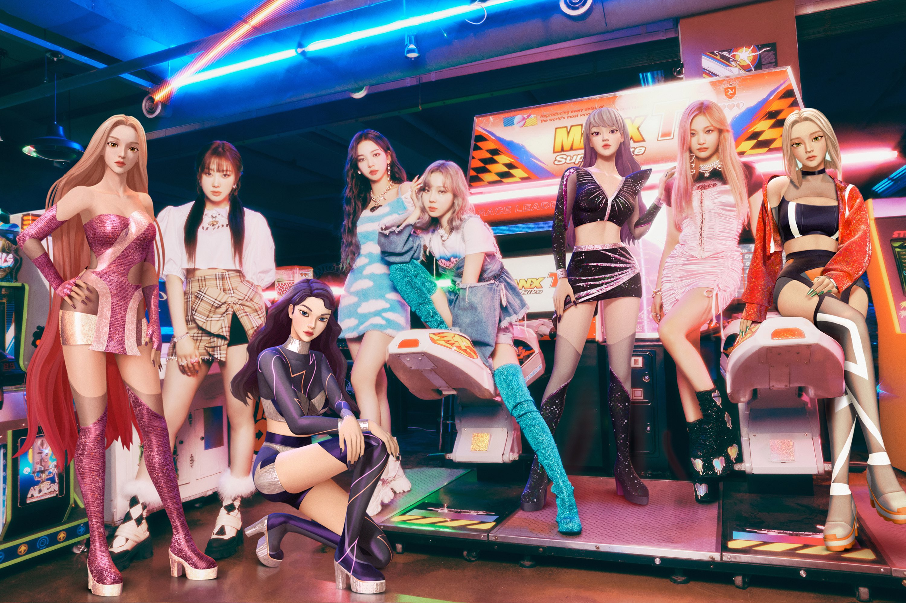
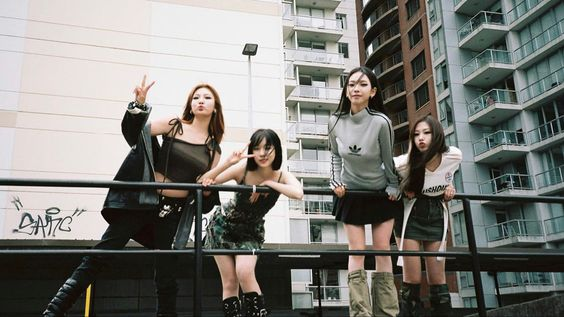

AESPA

aespa (nekad stilizovano i kao æspa) je južnokorejska grupa kompanije SM
Entertainment koja se sastoji od 4 članice (s leva na desno): Karina,
Giselle, Winter i
NingNing. U imenu grupe se nalazi karakter ‘æ’ koje predstavlja spoj reči ‘Avatar X
Experience’ i ‘aspect’. Ideja je doživljavanje novog sveta uz susret 'avatara', tj
drugog sebe.
Debitovale su 17. novembra 2020. godine sa singlom Black Mamba.
Univerzum u koji je grupa smeštena, takozvani SMCU (SM Culture Universe) se sastoji
od dva sveta, Kwangya i stvarni svet.
Kwangya
Prema njihovom metaverzumu, univerzum naseljavaju ljudi i njihovi
avatari(æ). Ti avatari predstavljaju alter ego koji je baziran na
informacijama koje ljudi postavljaju na društvene mreže.
Kako bi se razumelo o kome i čemu su njihove pesme, potrebno je upoznati se
sa nekoliko osnovnih pojmova koji se javljaju u SMCU:
- æ – avatar, alter ego čija je ličnost proizvod sadržaja koji osoba postavlja na društvene mreže svaki dan
- FLAT – mesto gde æ tj. avatari žive
- Kwangya – divljina na korejskom, u ovom kontekstu nepropisan, beskonačan prostor bez pravila i forme
- Real World – stvarni svet, gde ljudi žive
- MY – izraz u Kwangyi, znači najdraži prijatelj
- Nævis – vodilja koja pomaže aespi i avatarima
- SYNK – veza između čoveka i avatara
- SYNKOUT – fenomen gde se SYNK između čoveka i avatara nasilno prekida
- SYNK DIVE – sinhronizovana svest fizickog bića i njegovog avatara, osećaj međusobnog prisustva.
- REKALL – fenomen gde avatari dolaze u stvarni svet da provedu vreme sa svojim ljudima
- P.O.S (Port of Soul) – izvor energije koji povezuje FLAT sa stvarnim
svetom
- Black Mamba – Lik koji zlonamerno ometa vezu između avatara i njihovih ljudi, dom joj je Kwangya
Nakon sto je Black Mamba izazvala nagli prekid veze između avatara i njihovih ljudi (SYNKOUT), članice grupe su odlučile da otkriju šta se desilo, o čemu se radi u njihovom drugom singlu, Next Level. Pesma prepričava njihov put do Kwangye kako bi porazile Black Mambu. Za njihov odlazak u Kwangyu bilo je neophodno da se spoje u jedno sa svojim avatarima, u čemu im je pomogao AI sistem po imenu naevis. Po dolasku u Kwangyu, Black Mamba koristi njihove slabosti protiv njih i prisiljava ih da obrišu svoje avatare.

U narednim pesmama, Savage i Girls, devojke uspešno poražavaju Black Mambu koristeći svoje individualne sposobnosti:
- Karina – Rocket Puncher
- Winter – Armamenter
- Giselle – Xenoglossy (može da govori i razume druge jezike koji nisu stečeni prirodnim putem)
- Ningning – E.D Hacker
NingNing i Giselle su uspešno odvele grupu do njihove destinacije, uz pomoć Karine i Winter koje su zadužene za napade.
Stvarni svet
Nakon pobede nad Black Mambom, devojke se vraćaju u stvarni svet, čime se započinje druga sezona SMCU. Naevis je izbačena iz njenog univerzuma, kao kazna za pomaganje devojkama u borbi protiv Black Mambe. Kroz pesme je prikazan život članica u stvarnom svetu, naizgled bez ikakvih posledica njihovog boravka u Kwangyi. Dolazak Naevis u stvarni svet izaziva niz čudnih fenomena, koji vremenom izazivaju pažnju sve većeg broja ljudi. U početku su to manji događaji, koje samo njih 4 primećuju, ali kako vreme prolazi njihove traume koje je izazvala bitka sa Black Mambom izlaze na videlo i prelaze naizgled na lošu stranu i počinju da izazivaju probleme u stvarnom svetu. Budući da se povratak u stvarni svet desio relativno nedavno, još uvek nema toliko sadržaja, a spekuliše se da je sledeći korak povratak u Kwangyu.
